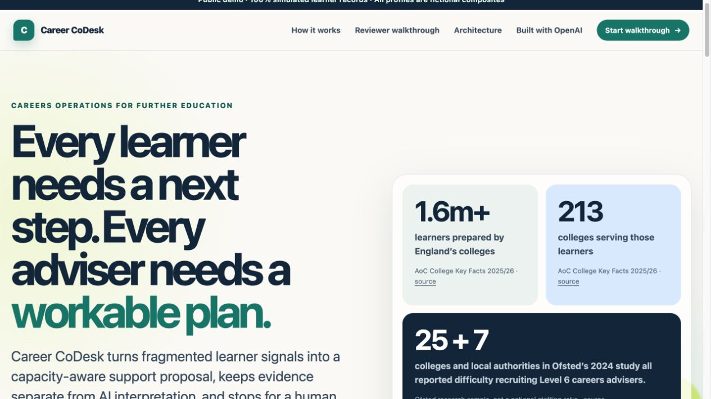
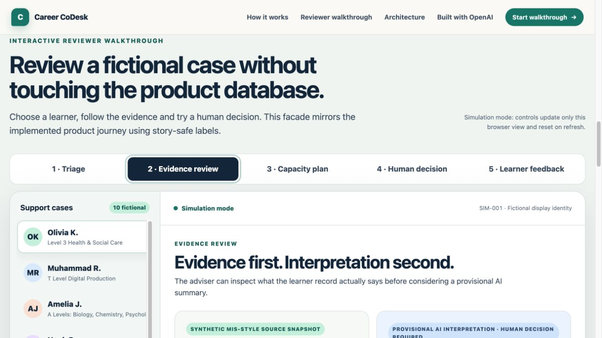
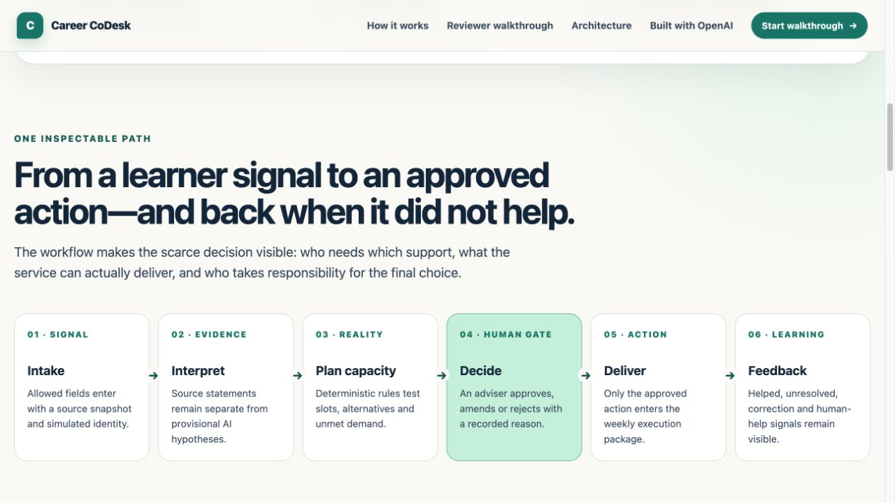

1.6m+learners in England’s colleges
AoC College Key Facts 2025/26 · source
01 · The FE capacity problem
Careers teams need a faster way to turn fragmented signals into fair, workable decisions.
AoC College Key Facts 2025/26 · source
AoC College Key Facts 2025/26 · source
Ofsted study: 25 colleges + 7 local authorities reported difficulty recruiting Level 6 advisers · source
02 · Built for FE careers advisers
Career CoDesk brings fragmented learner evidence and limited team capacity into one reviewable support plan.
Study choice, transition, apprenticeship or uncertainty.
What is known and what the careers team can deliver.
Approve, amend or reject the proposed support.
One approved action, followed by the learner response.
Education careers operations—not job search or automated job matching.
03 · The adviser interface
Three project views keep evidence, capacity and human approval visible—using fictional learner identities only.

Start from the FE careers context and see why capacity needs a plan.

Compare source records with provisional AI interpretation.

Follow the support path through decision and learner feedback.
03 · Human in the loop
An OpenAI API-ready assistance layer can organise evidence and suggest education support. It cannot activate a learner plan.
Structures evidence and proposes education support—not a job match.
Approve, amend or reject with a recorded reason.
Unresolved cases return to the careers team without erasing history.
Evaluated MVP: deterministic local adapter behind the same gateway boundary.
04 · Integration + privacy
Institution-owned records.
Allowed fields and local permissions.
Evidence → capacity → human decision.
One versioned execution package.
05 · Built with OpenAI + Team
134 deterministic tests · 8 repeatable scenarios · human acceptance gate
Team
Product · research · AI workflow